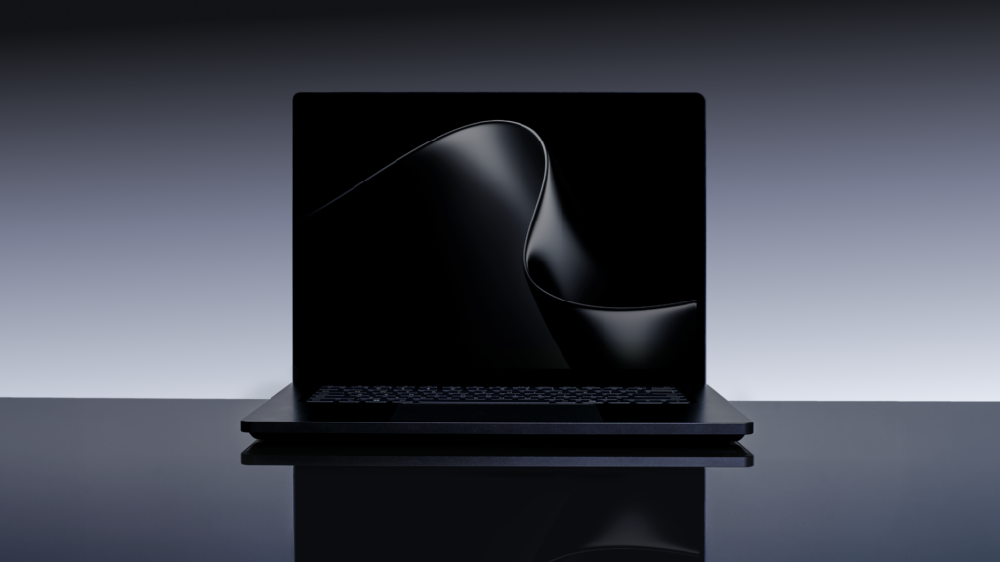

RTX Spark 首批个人 AI PC 终端阵列
Microsoft 与 NVIDIA 将 RTX Spark 从平台发布落到一组终端 PC：Surface Laptop Ultra、ASUS ProArt P16、Dell XPS 16、HP OmniBook X 14、Lenovo Yoga Pro 9n、MSI Prestige N16 Flip AI+ 等被列入首批设备。
- AI 要点：面向本地个人代理、创作应用、AI 开发和游戏，官方称支持最高 128GB 统一内存和完整 RTX / CUDA 软件栈。
- 边界说明：芯片本体不计入；这里按“已命名的终端 PC 机型”计入，预计从秋季开始上市。
- 来源：Windows Experience Blog、NVIDIA Newsroom